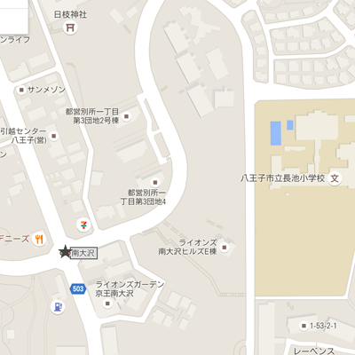

坂道注意！重力に負けるな！
危険度：★★★☆☆
すごい速さで自転車が下ってくるかもしれない！道の真ん中はあぶないぞ。ぶつかる可能性が高い！どちらか片側によっておこう！

下り坂はついスピードを出してしまうけどカーブの先に誰かがいるかもしれない！常にブレーキを意識しよう！

悪魔の交差点にようこそ...

危険度：★★★★☆
一番トリッキーな動きのできる君は周りに迷惑をかけがち。自分のことばかり考えないで坂から降りてる、もしくはお店から出てくる自転車や車に注意しよう！
この交差点はとってもデリシャスなフードを提供してくれるデニーズ、セブンイレブン、動物病院などが鎮座する！お店に出入りする車や人の動きに注意しよう！
歩道を行く人や車道脇を通る自転車にいっそう注意しよう！特に下り坂から降りてくる自転車はスピードがあるから注意！

人気ラーメン店、麺でるは込んでる！路上駐車に注意！
危険度：★★☆☆☆
道路を横断するときは物陰からはめっちゃ危ないぞ！ちゃんと横断歩道を渡ろう！
車道の障害物を避けるときは前後確認！障害物の陰から何かが飛び出てくるかもしれないのでそこもよく確認！
ラーメン食べたいのはわかるけど路上駐車よくない！

お前、ここで散る
危険度：★★★☆☆
カーブの先から車がくるかも！目だけでなく音も聞いて見極めよう！ここは死亡事故のあった場所だ！すごく注意しよう！死ぬぞ！